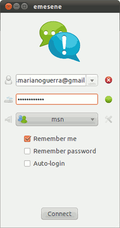

emesene
Dieser Artikel wurde für die folgenden Ubuntu-Versionen getestet:
Dieser Artikel ist mit keiner aktuell unterstützten Ubuntu-Version getestet! Bitte diesen Artikel testen und das getestet-Tag entsprechend anpassen.
Zum Verständnis dieses Artikels sind folgende Seiten hilfreich:

Emesene  ist ein plattformunabhängiger Instant Messenger für das Protokoll .NET Messenger Service (auch bekannt als MSN bzw. WLM). Das Programm orientiert sich am Microsoft-Original, verzichtet aber auf Werbung und besitzt eine einfache Oberfläche. Da MSN Anfang 2013 eingestellt wurde, funktioniert emesene inzwischen nur noch mit dem Protokoll XMPP (Jabber).
ist ein plattformunabhängiger Instant Messenger für das Protokoll .NET Messenger Service (auch bekannt als MSN bzw. WLM). Das Programm orientiert sich am Microsoft-Original, verzichtet aber auf Werbung und besitzt eine einfache Oberfläche. Da MSN Anfang 2013 eingestellt wurde, funktioniert emesene inzwischen nur noch mit dem Protokoll XMPP (Jabber).
Funktionen:
Offline Nachrichten senden/empfangen
Einfache Bedienoberfläche ohne Werbung
Dateitransfers
Themenunterstützung
Emoticon Unterstützung
Chatdialoge mit Tab-Unterstützung
Mehrsprachige Oberfläche
Plugin-Unterstützung
Chat-Aufzeichnungsmöglichkeit (via Plugin)
basale Windows-Live-Messenger-Merkmale
Installation¶
Emesene kann aus den offiziellen Paketquellen installiert werden [1]:
emesene (universe)
 mit apturl
mit apturl
Paketliste zum Kopieren:
sudo apt-get install emesene
sudo aptitude install emesene
Benutzung/Konfiguration¶
Nach Abschluss der Installation wird Emesene bei Ubuntu-Varianten mit einem Anwendungsmenü über "Internet -> Emesene" oder mit dem Befehl emesene gestartet [2].
Status¶
Der Status ist entweder im Systray oder in der geöffneten Buddy-Liste zu erkennen. Sie zeigt den eigenen Status und den der Buddys an:
| Status | |
| Icon | Erklärung |
| Verfügbar sein für alle Buddys. | |
 | Abwesend - z.B. nach längerer Inaktivität.. |
| Beschäftigt. | |
 | Gleich zurück. |
| Am Telefon. | |
 | Beim Essen. |
| Unsichtbar für andere Buddys. | |
| Untätig. | |
Plugins¶
Emense bringt in der Basisausführung eine Reihe von Erweiterungen mit. Die Plugins findet man unter "Optionen -> Erweiterungen". Diese können im nun erscheinenden Fenster (de)aktiviert werden. Neben den Basiserweiterungen stehen unter anderem diese Plugins zur Verfügung:
| Plugins | |
| Name | Erklärung |
| Current Song | Zeigt in der persönlichen Nachrichten an, welchen Song man gerade hört |
| LibNotify | Benachrichtigung bei verschiedene Ereignisse |
| Benachrichtigungen | Zeigt ein kleines Fenster im Benachrichtungsfeld, wenn jemand online etc. kommt |
| Plus | Messenger-Plus-ähnliches Plugin |
| Ton | Spielt Ton für allgemeine Ereignisse ab |
| Fensterrüttler | Schüttelt das Fenster wenn man angestoßen wird |
| Commands | Ermöglicht einige nützliche Befehle, die Liste alle Befehle erhält man mit dem Befehl /help |
| Eval | Ausführung von Python-Befehlen, Ausführung auf eigene Gefahr! |
| Statusänderung | Ändert den Status wenn man als untätig markiert wird (hierfür muss man GNOME und den gnome-screensaver installiert haben!) |
| Last.fm | Sendet Informationen an Last.fm |
| D-Bus | Über D-Bus mit emesene kommunizieren |
| LastStuff | Holt zuletzt gesehen etc. aus dem Verlauf |
| Logger | Speichert alle Ereignisse in einer Datei |
| Persönliche Nachricht | Sichert die persönliche Nachricht zwischen Sitzungen. |
| Plus Farbleiste | Eine Leiste, um Messenger-Plus-Formatierung einem Text hinzuzufügen |
| Screenshots | Macht Bildschirmfotos und sendet diese mit /screenshot |
| Rechtsschreibsprüfung | Rechtschreibprüfung für emesene |
| StatusHistory | Zeigt eine Liste mit Statusverläufen |
| Tny Url | Erstellt eine winzige Url mit /tiny <url> |
| Tweak | Ermöglicht der Konfigurationsdatei den letzten Feinschliff zu geben |
| Fenstervibration | Lässt das Fenster vibrieren wenn man gestoßen wird |
| Youtube | Zeigt Vorschaubilder von Youtube-Videos |
Anzeigebild ändern¶
Das eigene Anzeigebild stellt man ein unter "Optionen -> Anzeigebild ändern". Hier fügt man das Bild ein.
Spitznamen ändern¶
Den eigenen Spitznamen kann man unter "Optionen -> Spitzname ändern" ändern.
 Übersichtsartikel
Übersichtsartikel- Erstellt mit Inyoka
-
 2004 – 2017 ubuntuusers.de • Einige Rechte vorbehalten
2004 – 2017 ubuntuusers.de • Einige Rechte vorbehalten
Lizenz • Kontakt • Datenschutz • Impressum • Serverstatus -
Serverhousing gespendet von